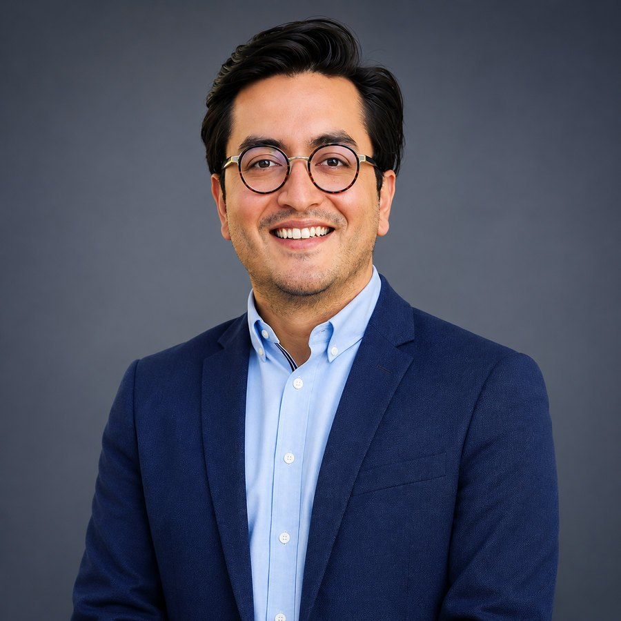

Urban sustainability
Urban expansion, land-use change, and metropolitan development.
Urban sustainability · Socio-spatial inequality · Economic complexity
My research examines how urban growth, economic structures and environmental processes shape socio-spatial inequalities. I bring together sustainability science, spatial analysis and quantitative methods to understand cities and inform more equitable urban futures.

01 / About
I am a civil engineer and sustainability researcher with a PhD from Universitat Politècnica de Catalunya (UPC). My research focuses on socio-spatial segregation, environmental justice, urban expansion, accessibility and economic complexity. I use geographic information systems, statistical modelling and compositional data analysis to explore urban and territorial challenges.
My professional experience includes postdoctoral research at the Center for the Future of Cities and the Institute for the Future of Education, both at Tecnológico de Monterrey. Alongside urban studies, I have contributed to research on complex thinking, educational innovation and artificial intelligence in higher education.
My academic training includes sustainability studies at UPC and Chalmers University of Technology, and graduate studies in data science. I currently serve in regional academic leadership at Tecnológico de Monterrey.
02 / Research
My research connects urban systems, territorial development, sustainability science, and educational innovation.
Urban expansion, land-use change, and metropolitan development.
Segregation, accessibility, and environmental justice.
Economic diversification and its territorial implications.
Artificial intelligence, learning technologies, and complex competencies.
03 / Projects
A selection of the questions and approaches that guide my work.
Research on the relationship between metropolitan development, local economic structures and socio-spatial segregation in Mexico.
Using compositional data analysis to assess the distribution of urban tree ecosystem services.
Investigating the development of interdisciplinary and social-entrepreneurship competencies and the use of educational technologies.
04 / Publications
Peer-reviewed research and scholarly contributions across sustainability, cities, and education.
Peer-reviewed contributions selected from my academic CV. For the full and most up-to-date list, visit my researcher profiles.
Cruz-Sandoval, M., Gómez-Zaldívar, F., Peraza-Mues, G. & Ponce-López, R. · Applied Geography
Read publication / DOI ↗Cruz-Sandoval, M., Vázquez-Parra, J. C. & Carlos-Arroyo, M. · Heliyon
Read publication / DOI ↗Cruz-Sandoval, M., Roca, E. & Ortego, M. I. · Sustainability
Read publication / DOI ↗Cruz-Sandoval, M., Ortego, M. I. & Roca, E. · Sustainability
Read publication / DOI ↗Sanabria-Z, J., Cruz-Sandoval, M., Moreno-Romo, A., Bosch-Gómez, S. & Ramírez-Montoya, M. S. · International Journal of Innovation Studies
Read publication / DOI ↗Cruz-Sandoval, M., Carlos-Arroyo, M., de los Rios-Berjillos, A. & Vázquez-Parra, J. C. · Humanities & Social Sciences Communications
Read publication / DOI ↗Vázquez-Parra, J. C., González-González, C. S., Amézquita-Zamora, J. A., et al. · Frontiers in Education
Read publication / DOI ↗A curated selection rather than an exhaustive bibliography. The complete record and current citation indicators are available through Scopus and Google Scholar.
05 / Academic
Regional Head of Civil and Sustainable Technologies, Tecnológico de Monterrey, Mexico City Region (since 2024).
Center for the Future of Cities (2023–2024) and Institute for the Future of Education (2022–2023).
Teaching and research across civil engineering, sustainability, spatial analysis, and educational innovation.
Recognition: Candidate, Mexican National System of Researchers (SNII-C), 2023–2026.
06 / Connect
For research collaborations and professional enquiries, reach out through LinkedIn. Explore my publications, affiliations and academic profiles using the links below.